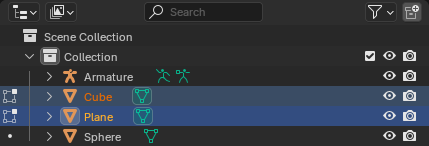
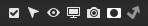

Interface¶
Header¶
Display Mode¶
Dropdown trên header này cho phép bạn chọn Outliner sẽ hiển thị những gì.
- Scenes:
Hiển thị các view layers, collections và object trên tất cả các scene.
- View Layer:
Hiển thị các collection và object trong view layer hiện tại của scene hiện tại.
- Video Sequencer:
Hiển thị các hình ảnh và video đang được dùng trong Video Sequencer.
- Blender File:
Liệt kê toàn bộ dữ liệu trong blend-file hiện tại. Ở phía bên phải của danh sách, một biểu tượng khiên hiển thị số lượng người dùng -- nhấp vào nó sẽ thêm hoặc xóa một fake user.
- Data API:
Liệt kê mọi data-block trong file cùng với tất cả thuộc tính mà nó có thể có.
- Library Overrides:
Hiển thị các library overrides. Được chia tiếp thành hai chế độ xem:
- Properties:
Hiển thị các data-block có thuộc tính bị ghi đè trong một danh sách được nhóm theo loại. Bạn có thể mở rộng từng data-block để xem và thay đổi các thuộc tính này.
- Hierarchies:
Hiển thị các data-block bị ghi đè trong một cây thể hiện thứ bậc của chúng. Điều này bao gồm cả những data-block cha bị ghi đè một cách ngầm định. Ví dụ, nếu bạn tạo một override cho một material, cây này sẽ thể hiện thứ bậc object > mesh > material.
Chế độ xem này còn hiển thị một cột biểu tượng ở bên phải cho phép bạn bật/tắt việc mỗi override có thể chỉnh sửa được hay không.
- Unused Data:
Liệt kê các data-block không còn được dùng hoặc chỉ có fake user. Bạn có thể thêm/xóa fake user bằng cách nhấp vào biểu tượng khiên ở bên phải.
Các data-block không dùng đến sẽ tự động bị xóa khi lưu và tải lại file. Bạn cũng có thể xóa chúng một cách thủ công bằng cách nhấp Purge trong header.
Search¶
Ô văn bản cho phép bạn lọc cây bằng cách gõ vào một chuỗi con. Bạn có thể focus vào ô này bằng Ctrl-F hoặc xóa nội dung bằng Alt-F.
Tùy chọn¶
Biểu tượng phễu trong header cung cấp thêm khả năng kiểm soát những gì được hiển thị trong editor. Tùy vào Display Mode, một số tùy chọn sẽ không khả dụng.
- Restriction Toggles
Thiết lập những Restriction Toggles nào sẽ được hiển thị.
- Sort Alphabetically
Sắp xếp các mục theo thứ tự alphabet.
- Sync Selection
Quyết định có đồng bộ hóa việc chọn trong Outliner theo hai chiều với các editor 3D Viewport và Video Sequencer hay không.
- Show Mode Column
Hiển thị cột dùng để chuyển đổi object interaction mode.
Search¶
- Exact Match
Chỉ hiển thị những mục có tên khớp hoàn toàn với search text thay vì chỉ chứa nó như một chuỗi con.
- Case Sensitive
Phân biệt chữ hoa/chữ thường khi so sánh văn bản tìm kiếm với tên của các mục.
Filter¶
- All View Layers
Hiển thị tất cả view layers trong scene thay vì chỉ view layer đang hoạt động. Kết hợp với việc tắt bộ lọc Objects, tùy chọn này cho một cái nhìn tổng quan gọn gàng về mọi collection trong mối quan hệ với các view layer.
- Collections
Hiển thị các collection trong hệ thống phân cấp của scene. Khi tùy chọn này bị tắt, chỉ bản thân các collection bị ẩn; các object bên trong chúng vẫn hiển thị.
- Objects
Hiển thị các object trong hệ thống phân cấp của scene. Tắt tùy chọn này sẽ cho bạn cái nhìn tổng quan chỉ gồm các collection.
- Object State
Liệt kê các object dựa trên trạng thái hoặc giới hạn của chúng. Kết quả có thể bị đảo ngược bằng nút bật/tắt Invert.
- All:
Hiển thị tất cả object.
- Visible:
Chỉ hiển thị những object nhìn thấy được trong 3D Viewport. Điều này tính đến cả hai cài đặt Hide in Viewports và Disable in Viewports; xem Restriction Toggles.
- Selected:
Chỉ hiển thị những object hiện đang được chọn trong 3D Viewport.
- Active:
Chỉ hiển thị object đang hoạt động (thường là object được chọn cuối cùng).
- Selectable:
Chỉ hiển thị những object có thể được chọn trong 3D Viewport; xem Restriction Toggles.
- Object Contents
Liệt kê các material, modifier, mesh data,... liên quan làm node con của từng object.
- Object Children
Hiển thị các object con dưới dạng node con trong cây Outliner. Khi tắt, các object con sẽ được hiển thị dưới dạng node ngang hàng (trừ khi chúng nằm trong một collection khác với object cha, khi đó chúng sẽ không được hiển thị trong collection của cha chút nào).
- Meshes/Lights/...
Cho phép bạn lọc bớt object theo loại.
- System Overrides
Hiển thị các thuộc tính data-block được định nghĩa/điều khiển tự động (ví dụ: để data-block trỏ tới dữ liệu đã bị ghi đè thay vì dữ liệu gốc). Chỉ khả dụng trong Display Mode Library Overrides.
Miscellaneous¶
Một số tùy chọn trong header sẽ chỉ hiển thị nếu tương thích với Display Mode đang hoạt động.
- New Collection View Layer
Thêm một collection mới bên trong collection được chọn.
- Filter by Type Blender File Unused Data
Hạn chế loại data-block được hiển thị trong Outliner.
- Keying Sets (Data API) Data API
Thêm/Xóa thuộc tính được chọn vào/ra khỏi Keying Set đang hoạt động.
- Drivers
Thêm/Xóa Drivers cho mục được chọn.
- Purge (Orphan Data) Unused Data
Mở một hộp thoại để xóa các data-block không dùng đến khỏi blend-file hiện tại hoặc bất kỳ Linked Data nào (không thể hoàn tác).
- Local Data-Blocks
Xóa các data-block không dùng đến khỏi blend-file hiện tại.
- Linked Data-Blocks
Xóa các data-block không dùng đến khỏi Linked Data.
- Recursive Delete
Xóa các data-block chỉ được dùng bởi những data-block không còn dùng đến, đảm bảo không còn sót lại data-block mồ côi nào sau khi thực thi.
Main Region¶
Object Interaction Mode¶

Các biểu tượng chế độ. Hiện có hai object đang ở Edit Mode; có thể thêm object thứ ba.¶
Nếu một object được chọn đang ở một interaction mode khác với Object Mode mặc định, Outliner sẽ hiển thị biểu tượng đại diện cho chế độ đó ở bên trái.
Nếu object đang hoạt động có biểu tượng như vậy, Outliner còn hiển thị một dấu chấm bên cạnh các object cùng loại. Bạn có thể nhấp vào dấu chấm đó để chuyển sang một object khác mà vẫn giữ nguyên chế độ.
Nếu chế độ hỗ trợ Chỉnh sửa nhiều Object, bạn cũng có thể nhấp vào một dấu chấm bằng Ctrl-LMB để thêm một object vào chế độ.
Bạn có thể nhấp vào biểu tượng chế độ của object đang hoạt động để chuyển nó (cùng mọi object khác trong trường hợp Multi-Object Editing) về Object Mode. Bạn cũng có thể nhấn Ctrl-LMB vào biểu tượng chế độ của một object được chọn -- nhưng không đang hoạt động -- để chỉ chuyển riêng object đó về Object Mode.
Restriction Toggles¶

Các công tắc giới hạn.¶
Phần bên phải của Outliner hiển thị một loạt biểu tượng bật/tắt cho mọi collection, object, bone, modifier và constraint. Chúng có thể được dùng để làm cho mục trở nên vô hình, không thể chọn, v.v.
Ghi chú
Mặc định chỉ hiển thị một vài biểu tượng. Bạn có thể dùng pop-over Filter để hiển thị thêm các biểu tượng khác.
Nhấp vào một biểu tượng bằng Shift-LMB sẽ bật/tắt nó cho mục đó và tất cả các mục con của nó.
Nhấp vào biểu tượng của một collection bằng Ctrl-LMB sẽ bật nó cho collection đó (cùng các collection cha/con của nó) và tắt nó cho tất cả các collection khác. Nhấp lần nữa sẽ bật lại cho các collection khác.
- Exclude from View Layer Collections
Bật/tắt việc collection được tính vào trong View Layer hiện tại. Khi bị loại trừ, nội dung của nó sẽ bị ẩn trong 3D Viewport, trong bản render và trong Outliner. Xem Include để biết thêm thông tin.
- Disable Selection
Bật/tắt việc object hoặc collection có thể được chọn trong 3D Viewport. Điều này có thể hữu ích, chẳng hạn với các hình ảnh tham chiếu mà bạn chỉ muốn hiển thị và không bao giờ chọn/di chuyển.
Xem thêm thông tin cho:
- Hide in Viewports
Bật/tắt khả năng hiển thị của object hoặc collection trong (chỉ) 3D Viewport, cho view layer hiện tại. Bản render không bị ảnh hưởng.
Thay vì nhấp vào biểu tượng này, bạn có thể nhấn H khi di chuột tới 3D Viewport để ẩn các object được chọn, hoặc nhấn Alt-H để bỏ ẩn tất cả object.
Cài đặt này chỉ có hiệu lực trong blend-file hiện tại: khi bạn Link hoặc Append nó vào một blend-file khác, mọi collection và object sẽ hiển thị ở đó.
Các object bị ẩn theo cách này vẫn là một phần của view layer, nên chúng vẫn được tính toán và ảnh hưởng đến hiệu năng phát lại.
Xem thêm
Có thể ẩn collection riêng cho từng 3D Viewport; xem Local Collections trong Sidebar.
- Disable in Viewports
Bật/tắt khả năng hiển thị của object hoặc collection trong (chỉ) 3D Viewport, cho tất cả view layer. Bản render không bị ảnh hưởng.
Cài đặt này độc lập với Hide in Viewports. Một object cần bật cả hai cài đặt mới hiển thị được. Bạn có thể dùng cài đặt này cho việc "ẩn lâu dài", giữ cho object vô hình ngay cả sau khi nhấn Alt-H.
Cài đặt này được giữ nguyên khi link hoặc append sang các blend-file khác.
Các object bị ẩn theo cách này không còn là một phần của view layer, nên chúng không còn được tính toán và không ảnh hưởng đến hiệu năng phát lại.
- Disable in Renders
Bật/tắt khả năng hiển thị của object hoặc collection trong (chỉ) bản render, cho tất cả view layer. 3D Viewport không bị ảnh hưởng.
Điều này thường được dùng cho các object hỗ trợ việc modeling và animation nhưng không thuộc về hình ảnh cuối cùng.
- Holdout Collections
Bật/tắt thuộc tính Holdout của collection, thuộc tính này khiến các object trong collection khoét một lỗ hoàn toàn trong suốt vào đầu ra render của view layer.
- Indirect Only Collections Cycles
Bật/tắt thuộc tính Indirect Only của collection. Các object bên trong collection này sẽ chỉ đóng góp vào hình ảnh cuối cùng một cách gián tiếp thông qua bóng đổ và phản xạ.